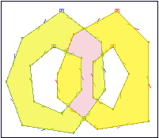

Análisis espacial¶
El análisis de datos con SIG tiene por finalidad para descubrir estructuras espaciales, asociaciones y relaciones entre los datos, así como para modelar fenómenos geográficos. Los resultados reflejan la naturaleza y calidad de los datos así como la pertinencia de los métodos y funciones aplicadas. Las tareas y transformaciones que se llevan a cabo en el análisis espacial precisan datos estructurados, programas con las funciones apropiadas y conocimientos sobre la naturaleza del problema, para definir los métodos de análisis.
El proceso convierte los datos en información útil para conocer un problema determinado. Es evidente que los resultados del análisis espacial añaden valor económico y, sobre todo, información y conocimiento a los datos geográficos
Operadores espaciales¶
Estos son los encargados de realizar operaciones geométricas entre las geometrías que se les pasa como argumentos. Están definidos en la norma SFA y PostGIS soporta todos ellos.
Buffer¶
Es el conjunto de puntos situados a una determinada distancia de la geometría
Acepta distancias negativas, pero estas en lineas y puntos devolverán el conjunto vacio.
Intersección¶
Genera una geometría a partir de la intersección de las geometrías que se les pasa como parámetros.

¿Cúal es el area en común de dos círculos situados en los puntos (0 0) y (3 0) de radio 2?:
SELECT ST_AsText(ST_Intersection(
ST_Buffer('POINT(0 0)', 2),
ST_Buffer('POINT(3 0)', 2)
));
Práctica¶
¿Qué ciudad de Costa Rica tiene más zonas fluviales en un radio de 20km?
Unión¶
Al contrario que en el caso anterior, la unión produce un una geometría común con las geometrías que se le pasa a la función como argumento. Esta función acepta como parámetro dos opciones, las geometrías que serán unidas:
ST_Union(Geometría A, Geometría B)
o una colección de geometrías:
ST_Union([Geometry])

Práctica¶
Crear una tabla nueva con los tramos de los rios totales
Diferencia¶
La diferencía entre dos geometrías A y B, son los puntos que pertenecen a A, pero no pertenecen a B

{kind=link}
ST_Difference(Geometría A, Geometría B)
Diferencia simétrica¶
Es el conjunto de puntos que pertenecen a A o a B pero no a ambas.

ST_SymDifference(Geometría A, Geometría B)
Tipos de geometrías devueltas¶
El tipo de geometrías que devuelven estas operaciones no tienen porque ser igual al tipo de geometrías que le son pasadas como argumentos. Estas operaciones devolverán:
- Una única geometría
- Una geometría Multi si está compuesta por varias geometrías del mismo tipo
- Una GeometryCollection si está formada por geometrías de distinto tipo.
En este último caso habrá que proceder a una homogeneización de las geometrías que son devueltas, para ello podremos utilizar diferentes estrategias:
- El uso de clausulas de filtrado, por ejemplo indicando que solo se devuelvan aquellas geometrías cuya intersección sea una línea.
- Crear las tablas de salida de tipo Multi, en este caso las geometrías que no sean multi podrán ser convertidas a este tipo mediante la función ST_Multi
- En caso de que las geometrías devueltas sean tipo GeometryCollection, será necesario iterar esta colección, y extraer mediante la función ST_CollectionExtract las geometrías en las que estamos interesados, indicandole para ello a la función la dimensión de las geometrías.
Transformación y edición de coordenadas¶
Mediante el uso de diferentes funciones seremos capaces de manejar transformaciones entre sistemas de coordenadas o hacer reproyeciones de las capas. Para un manejo básico de estas utilizaremos las funciones que PostGIS pone a nuestra disposición:
- ST_Transform(geometría, srid), que nos permite la transformación de la geometría al SRID que le pasamos por parámetro.
- **ST_SRID(geometria) nos muestra el SRID de la geometría
- ST_SetSRID(geometria, srid) asigna el SRID a la geometría pero sin relizar la transformación
En la tabla spatial_ref_sys encontraremos la definición de los sistemas de coordenadas de los que disponemos. Podremos consultar la descripción de ellos mediante consultas select del estilo:
# select * from spatial_ref_sys where srid=4326;
Para transformar las geometrías en otros sistemas de coordenadas, lo primero que debemos saber es el sistema de coordenadas de origen y el de destino. Hemos de consultar que estos se encuentran en la tabla spatial_ref_sys. En caso de que alguna de nuestras tablas no tenga asignado un SRID, el valor de este será -1, valor por defecto, por lo que habrá que asignarle el sistema de coordenadas antes de la transformación.
Práctica¶
¿Cuanto mide el rio más largo de la tabla CRI_rios?. Comprobar el sistema de coordenadas original y las medidas para realizar el cálculo.
¿Cual es la provincia que más longitud de rios contiene?
De la capa de reservas naturales extraer en una capa aquellas que son del mismo tipo desig
Comprobar la provincia que tiene más superficie de espacios naturales del tipo Biological Reserve
Separar en tablas las carreteras en función del tipo (RTT_DESCRI)
Calcular las reservas del tipo Protective Zone que son atravesadas por una carretera de cualquier tipo y calcular la superficie de las zonas separadas
Unir en una sola zona aquellas zonas protegidas (Protective Zone) que pertenezcan a una sola provincia exclusivamente y crear una nueva capa con ellas
¿Cuales de las reservas de tipo Refugio natural de vida salvaje (National Wildlife Refuge) tienen parte marina?
Crear una tabla con las ciudades de Costa Rica.